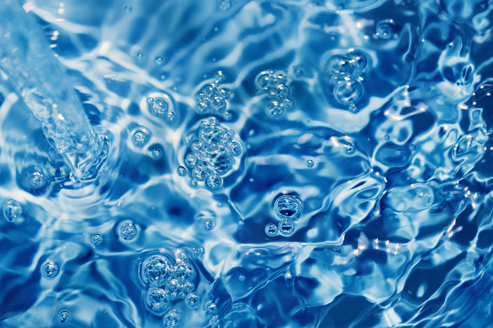

Water Resources
- Water resources are natural resources of water that are potentially useful as a source of water supply.
- 97% of the water on the Earth is salt water and only three percent is fresh water; slightly over two thirds of this is frozen in glaciers and polar ice caps.
- Artificial sources of fresh water can include treated watewater and desalinated water
- Water resources are under threat from water scarcity, water pollution, water conflict and climate change.
- Water is the most abundant natural resource on our planet as it comprises three-fourth of earth's surface.
-
Water is an important resource as it helps in sustaining life on earth.
